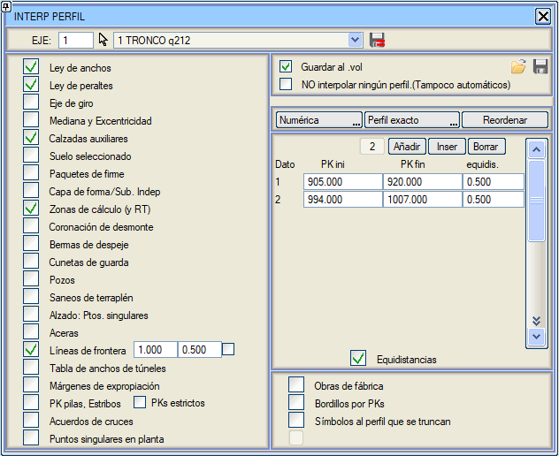

| |
|
ENKESİT ENTERPOLASYONU
|
ENKESİT (ALZADO) menüsünün bu alt menüsünden, bulunulan güzergahın enkesitine yeni enkesitler enterpole etme komutu verilebilir. Bunun için, aşağıda gördüğümüz diyalog kutusunun sol tarafındaki olaylardan bazılarını etkinleştirmek veya hangi başlangıç KM'si ile hangi bitiş KM'si arasında belirli bir eşit aralıkla enkesit enterpole edilmek istendiğini belirten veriler eklemek gerekir. 
Eklenen bu eşit aralıkların etkili olması için Eşit Aralıklar kutucuğunun etkinleştirilmiş olması gerekir. .vol'a kaydet kutucuğunun etkinleştirilmiş olması ve bu menüden çıkıldıktan sonra tüm bu yapılandırmanın bulunulan güzergahın .vol dosyasına kaydedilmesi önemlidir. Hiçbir enkesiti enterpole etme. (Otomatik olanlar da dahil): Proje tablosundaki Enkesit enterpolasyonu yapma ile eşdeğerdir, ancak boykesit hesaplamasında etki eder ve güzergahın .vol dosyasıyla kaydedilir. Sınır çizgileri: çok ayrık olan iki çizgi noktası arasına ara enterpolasyon KM'leri eklemeyi sağlar. Bu, iki güzergahın birleşim bölgelerindeki modelleri hassaslaştırmayı sağlar. Bu seçeneğin yanındaki kutucuğu etkinleştirerek, bu seçeneğin kesişim ve kavşakları hesaplarken kullanılmasını engellemek mümkündür (ancak normal hesaplamada çalışacaktır). Ayak KM'leri, Kenarayaklar: Kesin KM'ler seçeneği, ayakların yarı genişliği, kenarayak dayanakları, tabliyelerin ve kirişlerin S ve Smin'i, değişken yükseklikteki tabliyelerin ayrıklaştırılması vb. nedenli km'leri hariç tutar. Bir güzergaha otomatik olarak enterpole edilen enkesitler:
Hat ve Travers: Hat ve Travers menüsünün veri aralıklarında tanımlanan KM'lerde enkesitleri enterpole eder. |